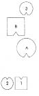

HELLINGER “Tanrı katı ve yeryüzü” konulu konuşmamı örneklerle açıklamak için bize ayrılan bu üç öğleden sonrayı ağırlıklı olarak ölümcül hastalığı olanlar ya da intihar tehlikesi altında olanlarla çalışarak değerlendirmek bu toplantının konusuna uygun düşüyor.
Tekerlekli sandalyesindeki Astrid’e Buraya, yanıma gel! Sandalyenle gelebilirsin. Hastalığın ne?
ASTRID Şeker hastasıyım. Hastalık sonucu diyalize bağımlı hale geldim, ardından bir böbrek nakli yapıldı.
HELLINGER Bildiklerimi hizmetine sunacağım. Ve eğer iyi ruhunla ana babanın iyi ruhları ile benimle işbirliği yaparsan belki de sana yardımcı olabilecek bir şey bulacağız. Anlaştık mı? Güzel. –O halde bana ailenden söz et. Ailende belirleyici olaylar yaşandı mı? Erken ölen ya da kendini öldüren biri oldu mu örneğin?
ASTRID Benden sonra doğan üçüncü çocukları üç günlükken ölmüş.
HELLINGER Bu önemli. Kardeşlerin çok güçlü bir tepki verdiği bir şeydir bu. Ailende başka bir şey yaşandı mı?
ASTRID Hastalığımın ortaya çıkışı, bizimle yaşayan kanser hastası büyükbabamın ölümüne denk geldi.
HELLINGER Annenin mi, babanın mı babası?
ASTRID Annemin.
HELLINGER Annenin ailesinde bunun dışında önemli bir şey yaşandı mı? Erken ölümler gibi?
ASTRID Savaş sırasında dayım 14 yaşında difteriden ölmüş.
HELLINGER Ebeveynin ya da büyük ebeveyninden biri önceden bir evlilik ya da ciddi bir ilişki geçirmiş mi?
ASTRID Hayır.
HELLINGER Gruptan seçeceğin temsilcilerle bu sistemi dizeceğiz şimdi. Önce temsilcileri seç. Anneni, babanı temsil edecekler gerek bize. Büyük çocuk kız mıydı, oğlan mı?
ASTRID Erkek kardeşim.
HELLINGER Ortanca?
ASTRID Benim.
HELLINGER Senin için de bir temsilci alıyoruz. –Ölen çocuk?
ASTRID Kızdı.
HELLINGER Onun için de birisini alıyoruz. –Çocuk neden ölmüştü?
ASTRID Bilinmiyor.
HELLINGER Bilinmiyor da ne demek?
ASTRID Annemin bana söylediği meme ememediği. Başka bir ölüm nedeni bilmiyorum.
HELLINGER Açlıktan mı ölmüş?
ASTRID Elimdeki tek açıklama bu. Bunun dışında sözü hiç açılmayan bir çocuk oldu.
HELLINGER Çocuğun ölümünden ötürü ana baba arasında suçlama oldu mu?
ASTRID Çocuk konusu asla açılmadı.
HELLINGER Pekâlâ, şimdi kişileri dizelim. Dizebilecek misin?
ASTRID Dizerim.
HELLINGER Böyle bir aile diziminin nasıl yapıldığını biliyor musun?
ASTRID Hayır.
HELLINGER Seçtiğin temsilcileri birer birer bu anda algıladığın biçimde birbirleriyle ilişki içinde iki elinle mekana yerleştiriyorsun. Hepsinin içsel resmine uygun yerde olduğunu gördüğünde öylece bırakıyorsun. –Şu anda nasıl hissediyorsan öyle diz. Duygunu izle. Son bir bakışla dizimin duygunu yansıtıp yansıtmadığına göz at, sonra yerine geç.
1. Resim

B Baba
A Anne
1 İlk çocuk, erkek
2 Ortanca çocuk, kız (=Astrid)
3 En küçük çocuk, kız, üç günlükken ölmüş
HELLINGER Baba nasıl?
BABA İkisi arasında sıkışmış hissediyorum kendimi, arka tarafımda bir tehdit algılıyorum. Çok tuhaf bir duygu. Dönüp bakmak istiyorum.
HELLINGER Anne nasıl?
ANNE Arkamda göremediğim çok fazla şey var. Çok yoğun.
HELLINGER Oğul nasıl?
BÜYÜK ÇOCUK Kız kardeşime güçlü bir bağ hissediyorum, anne babamdan ise çok uzağım.
HELLINGER Astrid’in temsilcisine Büyük kız nasıl?
ORTANCA ÇOCUK Anne babamın gözleri üzerimde. Uzakta olmak iyi.
HELLINGER Ölen çocuk nasıl?
EN KÜÇÜK ÇOCUK Kimseyi seçemiyorum. Kendimi ait hissetmiyorum.
HELLINGER Ölen çocuğu göz önüne getiriyorum şimdi.
2. Resim
HELLINGER Ebeveynde ne değişti?
BABA Karımdan yana hâlâ bir darlık hissetsem de böyle daha serbestim. Çok daha iyi nefes alabiliyorum.
HELLINGER Anne nasıl?
ANNE Rahatladım.
ORTANCA ÇOCUK Ben de daha iyiyim.
İki kız kardeş aralarında gülüşür.
HELLINGER Ne oldu aranızda?
ORTANCA ÇOCUK Böyle birinin hâlâ yanımda olması güzel.
HELLINGER Gruba Bu aileden edindiğim resimler çok yönlü. İlk resim, annenin aileden uzaklaşmak istediğini gösteriyor; ölen çocuğu izlemek istiyor. İkinci resim, büyük kızın kendisi giderek annesine engel olmak istediğini gösteriyor. Üçüncü resim ise büyük kızın da ölen kız kardeşinin peşinden gitmek istediğini. İkisi arasındaki uyumu gördünüz mü? Sevgiyi?
İki kız kardeş yeniden birbirlerine gülerler.
HELLINGER Görüyor musunuz? Gizleyemiyorlar bunu.
Grupta gülüşmeler.
HELLINGER Evet. –Şimdi anneyi babanın yanına yerleştiriyorum.
3. Resim
HELLINGER Böyle nasıl?
BABA Sağ tarafımda bir çekim var.
HELLINGER Baba gitmek istiyor olabilir. Çekim hissediyor. Ölen kızın yanına geç ve bak bakalım, nasıl olacak.
BABA Evet, böyle iyi.
HELLINGER Astrid’e Babanın ailesinde neler oldu?
ASTRID Kendinden küçük bir erkek kardeşi savaş sırasında zatürreden ölmüş. Ölümü çok ani olmuş.
HELLINGER Babaya Karının yanına geç yine. –Şimdi senin ölen küçük erkek kardeşini de dizime ekleyeceğim.
4. Resim
A Amca, 14 yaşında ölmüş
HELLINGER Ne değişti?
BABA Böyle iyi. Sağ tarafımdaki çekim kayboldu.
Ailenin diğer bireyleri için bir şey değişmemiştir.
HELLINGER Gruba Baba olasılıkla ölen kardeşine “Seni izliyorum” deme eğiliminde.
Anne böyle nasıl?
ANNE Erkek kardeş geldiğinde yine de bir şey değişti galiba. Daha önce bu ikili ilişki tam olarak yerine oturmuyordu. Bu değişti. Ama kardeşi çok da yaklaşmamalı.
HELLINGER Evet. Yoksa kadın erkeği kaybeder.
Astrid’e Dizimde kendi yerine geçmek ister misin? –Ölen kardeşinin adı neydi?
ASTRID Maria.
HELLINGER Ona bak ve “Sevgili Maria” de.
ASTRID Sevgili Maria.
HELLINGER Tekrarla!
ASTRID Sevgili Maria!
Uzun bir sessizlik
HELLINGER Ona, “Seni izliyorum” de.
ASTRID Seni izliyorum.
HELLINGER “Sevgiyle”
ASTRID Sevgiyle.
HELLINGER Tekrarla!
ASTRID Seni sevgiyle izliyorum.
HELLINGER Cümle doğru geliyor mu?
ASTRID Evet.
HELLINGER Bu, ölen kız kardeşe ne hissettiriyor?
EN KÜÇÜK ÇOCUK O kadar iyi değil.
HELLINGER Doğru.
EN KÜÇÜK ÇOCUK Ona ihtiyacım yok.
HELLINGER Gruba Yanılsamanın sonu bu.
Astrid’e Şimdi kız kardeşini alıyor ve olması gereken yere götürüyorum.
Ölen kız kardeşin temsilcisine Ebeveyninin önünde yere otur ve sırtını onlara yasla!
5. Resim
HELLINGER Ana babaya Ellerinizle hafifçe başına dokunun. Her ikiniz de!
Ölen çocuk orada nasıl?
EN KÜÇÜK ÇOCUK Daha iyi.
HELLINGER Ana baba nasıl?
Her ikisi birbirlerine gülümseyerek başlarıyla onaylarlar.
HELLINGER Astrid’e Kız kardeşine “Sevgili Maria” de!
ASTRID Sevgili Maria!
HELLINGER “Senin yerin orası.”
ASTRID Senin yerin orası.
HELLINGER “Ve ben burada kalıyorum.” –Gözlerini aç!
ASTRID Ve ben burada kalıyorum.
Uzun bir sessizlik
HELLINGER Derin nefes al! Anneye bak ve ona –nasıl seslenirdin?
ASTRID Anneciğim.
HELLINGER Ona “Anneciğim!” de.
ASTRID Anneciğim!
HELLINGER “Ben burada kalıyorum.”
ASTRID Ben burada kalıyorum. Sarsılmış, ağlar.
HELLINGER Evet. Bak ona ve sevgiyle “Anneciğim!” de.
Astrid duraksar.
ASTRID Anneciğim! Hıçkırıklara boğulur.
HELLINGER “Ben burada kalıyorum.”
ASTRID Ben.. ben.. ben..
HELLINGER “Ben burada kalıyorum.”
ASTRID Ben burada kalıyorum.
HELLINGER Gayet sade bir şekilde tekrarla: “Anneciğim!”
ASTRID Anneciğim, ben burada kalıyorum
HELLINGER Şimdi babaya bak! Ona nasıl seslenirdin?
ASTRID Babacığım.
HELLINGER “Babacığım!” de.
ASTRID Babacığım!
HELLINGER “Ben burada kalıyorum.”
ASTRID Ben burada kalıyorum.
HELLINGER Ona daha rahat söylüyorsun. Annene bir kez daha bak! –Seni alıp annenin yanına götürüyorum şimdi. Yanına geç. Tamam, öyle, iyice yanına!
6. Resim
HELLINGER Bak ona! Gözlerinin içine bak ve “Anneciğim!” de.
ASTRID Anneciğim!
HELLINGER “Ben kalıyorum.”
ASTRID Ben kalıyorum. Kararlı bir sesle söyler.
HELLINGER Tamam. Tekrarla!
ASTRID Anneciğim, ben kalıyorum.
HELLINGER Anneye Kollarını ona dola! Her ikisini de! Astrid’e “Anneciğim, ben kalıyorum” de.
ASTRID Anneciğim, ben kalıyorum. Yüksek sesle söyler.
HELLINGER İşte öyle. “Anneciğim, ben kalıyorum.”
ASTRID Anneciğim, ben kalıyorum. Hıçkırarak ağlar.
HELLINGER Nefes al! Derin nefes al! Nefes ver! Derin nefes alıp ver! Ağzını aç! Derin nefes alıp ver! Evet, işte öyle. Ve çok sakin bir şekilde tekrarla, “Anneciğim!”
ASTRID Anneciğim!
HELLINGER “Ben kalıyorum.”
ASTRID Ben kalıyorum.
HELLINGER Gruba Artık sesi çok sakin. Ancak şimdi oldu. Bütün gücü şimdi ortaya çıktı.
HELLINGER Astrid’e “Anneciğim, ben kalıyorum.”
ASTRID Anneciğim, ben kalıyorum.
HELLINGER Başardın. Söylediğini yerine getirecek misin? Annenin gözlerine bak ve “Evet, yapacağım” de.
ASTRID Evet, yapacağım.
HELLINGER Tamam, bu kadar.
Hellinger onu yerine götürür. Yanında oturan bir kadın kolunu Astrid’in omzuna doladığında “Hayır, hayır, bu onun ruhunu rahatsız eder. Kendi içinde en emin ellerde o. Senin avutman yalnızca yoğunlaşmasını dağıtır” der.
HELLINGER Gruba Böyle bir çalışmanın ardından derin bir nefes almam gerekiyor. Ama sanıyorum hastalığa yol açan hangi güçlerin iş başında olduğunu ve iyileşmeye geçişin nasıl bir güç gerektirdiğini görebildik. Hastalığa yol açan aynı sevginin kişiyi hastalıktan çıkardığını da görebildik. Sevginin hedefi değişti şimdi. Kendisiyse aynı kaldı. –Bir şey söylemek ya da yeterince açık olmayan bir nokta hakkında soru sormak isteyen varsa şimdi sorabilir.
KATILIMCI Baba için çözümsüz kalan bir şey olmadı mı? O da ölümü arıyordu.
HELLINGER Bu çalışmanın önemli bir ilkesi, danışanın ihtiyaç duyduğundan fazlasını yapmamaktır. Daha fazlası gerekmiyordu onun için. Bu açıkça ortadaydı. Bu noktaya gelindiğinde çalışmayı keserim. Yoksa gücünü almış olurum. Çalışma tepe noktasında bitirilir. Ortaya çıkanlar sonradan ele alınmaz ya da “Şimdi nasılsın?” vb diye sorulmaz. Bunlar gücünü alır. Hissediyor musun bunu?
KATILIMCI Evet.
Dört ay sonra bu danışandan şu mektup geldi:
“…günlerdir, haftalardır size yaşamımdaki, karşılaşmamızın başlattığı değişiklikleri bildirmek gibi içten bir istek ile bunu yerine getirme konusundaki utangaçlık arasında gidip geliyorum.
En somut, elle tutulur ‘başarı’ üç yıldır kesintisiz süre giden bir dizi böbrek ve idrar yolları enfeksiyonunun birden ortadan kalkması oldu. Bu benim için ilk bakışta düşünülebileceğinden çok daha fazla bir anlam ifade ediyor. Bu enfeksiyonlar geçirdiğim böbrek naklini tehlikeye atmakla kalmıyor, zor ve ağır bir cerrahi müdahaleye de razı olmaya itiyordu. Sonucu da hayli kuşkuluydu üstelik bu müdahalenin.
Annemin karşısında başlangıçtaki direncini çoktan yitiren ‘Ben kalıyorum’ ifadesi, yaşamaya iznim olduğu inancını verdi bana. Ve bu inanç özgürleştirici.
Gün yüzüne çıkan ve ailemizde ağ gibi birbirine dolanmış ‘Seni izliyorum’ ve ‘Senin yerine ben’ kilitlenmeleri, en azından ölmüş kız kardeşimle ilişki çerçevesinde açık bir çözüme kavuştu, baskısı kayboldu. Birden, neredeyse bir ömür boyu sürmüş olan ‘hastalık kariyerime’ ve tırmanan semptomlara son verme özgürlüğüne kavuştum. Süre giden dolaylı intihar çabası, itici gücü ve geçerliğini yitirdi…”